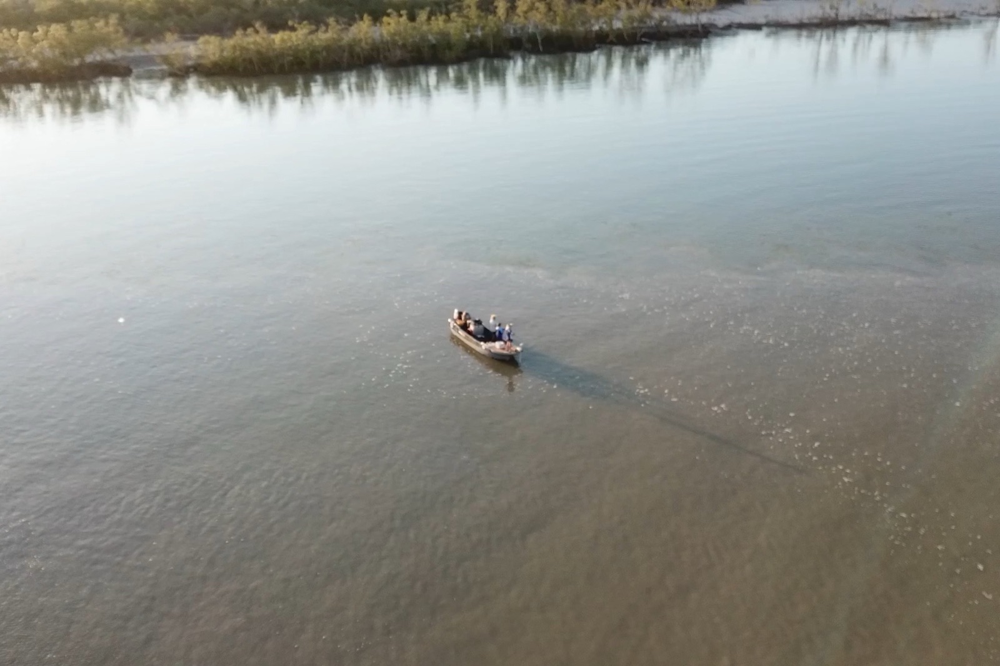
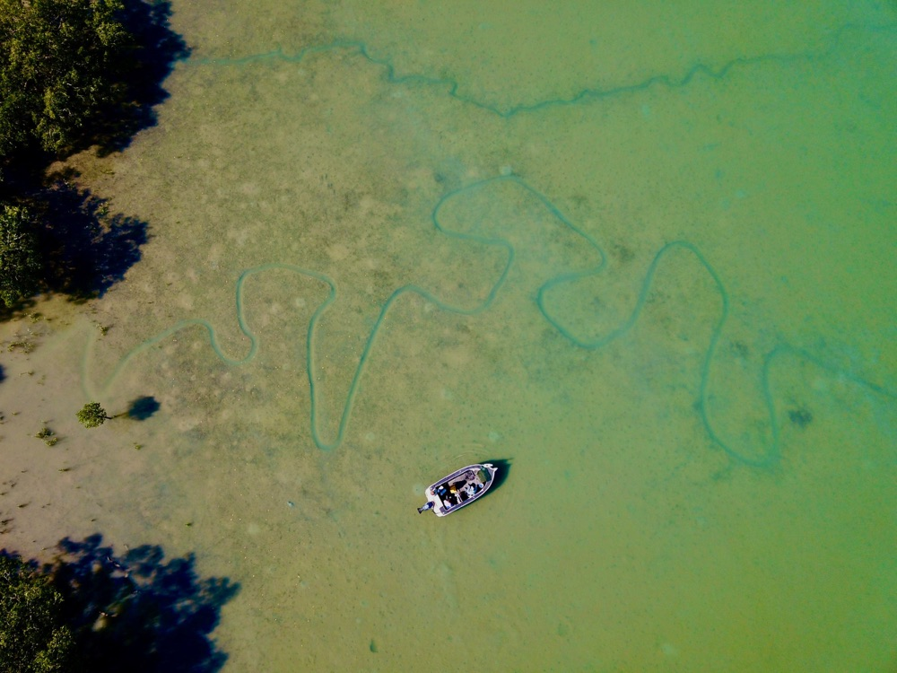

Bag a Barra, Oz Off Road Radio · 3AW / Nine Radio
Friday 11 October 2024

Listen · 7 min
Originally broadcast on 3AW / Nine Radio. Listen on the Bag a Barra, Oz Off Road Radio.
It's time to head to the top N and Bag a Barra. With Glenn Watty Watts, thanks to Shimano. Remember to buy local and fish local. visit shimanofish.com.au. Well, talking about working hard, they don't work much harder than this bloke. Can you hear the crunch?
Eh? Watty, you're back. You back, son. You've been to, where have you been?
Costa Rica. South America. Yeah. Yeah, I guess it's probably technically Central America.
It's the easy way to visualise it. that little skinny bit in between North America and South America. Oh, that just goes to show how much I know about geography, mate. I mean, like she is.
I mean, I just thought you would, you had down there. you know. I mean, VD. I mean, you can go some places to throw in a line.
Tell me about what were you doing there and how did you go? Did you catch any big fish? Yeah, mate. Actually, um, um, I mean, I probably say it every time I come back from one of our angling adventures trips, but this one is um, pretty special.
We took a group of 6 across there and we fly from Sydney to Dallas. We overnighted in Dallas and went to one of those big bass pro shops. pretty cool. Oh, I could imagine you in there.
You'd have been off, mate, you would have been. I mean, you would have been as happy. I mean, seriously, I mean, normally, I mean, to be honest, the only shopping you do is the bottle shop. So I could imagine what you were like in there.
Well, yeah, I mean, if you can imagine the biggest Bunnings you've ever been in and then, um, and then transfer that over to fishing and camping and hunting gear, that's, um, that's pretty much a bass pro shop, amazing places. Um, so yeah, overnight there, and then down into Costa Rica's only 4 hour flight from Dallas, and we went straight to a place called the Silver King Lodge, which is on the Caribbean coast, and they catch a fish that's familiar to Australians, um, but it's a much bigger version, the, um, the tarp on. You know, we have them up here. I think you might have caught a couple of corroborate.
Only tiny little fellas in Australia, but the ones we were catching over there, mate, they're about the, about 6 foot long, 7 foot long, and and they weigh. I think the one that I thought was about £180 Wow. How long it take you to pull that in?
Oh, that was a 50 minute fight, that was, yeah. That is unbelievable. So 7 foot long, £150 What's that in kilos?
Yeah, so 170, even if you just divide it by two, it's like 70, 80 kilos. So it's pretty much trying to, you know, it's efficient. And it's heavier than Harry. Yeah, they're huge and and they, they jump like crazy and just go mental.
So, yeah, Silver King Lodge is the best tarp on fishing in the world and and we definitely saw that. Um, that was we did 4 days there. Amazing place. And then back to San Jose.
They're only half hour flight. It's only a small country and all covered in jungle, so beautiful little small plane flights and we went across the west coast. And fish at a place called Crocodile Bay Resort, and they do sort of blue water fishing for sailfish, mail, and that sort of thing, but the group that I took over there, they really wanted to catch a fish called a rooster fish. Now, you probably have to look that up, but it's a bit, bit like a trevallee that we'd have over here, but they've got a great big mohawk and they jump and thrash around and just another one of those sort of bucket list international species.
So that was another amazing 3 days, and um, and then, yeah, we came home and I got home a couple of days ago, just still trying to catch up on a bit of sleep and you get the jet lag sorted out. Unbelievable. I mean, this is the go, isn't it? I mean, you've taken this to another level now.
I mean, so people can book these sorts of trips with you, just simply by going to angling adventures, and they can book these exotic and, you know, and these are adventures. These are real adventures. I mean, what you're talking about, it's another level. I mean, I mean, you're getting a lot of bookings for this sort of stuff.
I guess people, you know, who are keen fishermen and it's a holiday as well. I mean, get away and get to places like that you're talking about to go fishing and obviously, you know, there's a bit of downtime and a few beers at night. I mean, it must be just amazing. I mean, the customers that do this must love it.
Yeah, and Costa Rica's a probably a bit of a deceptive place. You mean, you sort of think of South America as perhaps a bit of a scary place, but it's, uh, you know, San Jose, the capital, it, it's probably about equivalent to a town like Geelong, in Victoria. You know, there's 3 or 400,000 people there. It's a modern, clean town.
You know, um it's a really friendly society. They place a lot of influence on sort of happiness in the environment in Costa Rica and, you know, they're such happy people that go, they don't even have an army there, mate, you know, so they, they just get along because they're good people and, yeah, they just loved having us, us Australians there. Of course, they're used to mostly Americans and and they love our sort of attitude towards life and and fishing in general and we had a heap of fun with the Costa Rican people and um, you know, like if you can learn a bit of Spanish is a bit of fun as well. Can you give us something?
Just give us something. Well, we did a bit, we're doing drifting for fishing. Well, don't, don't swear because there could be some, you know, Spaniards listening to us. We'll know what you're saying. Yeah, okay.
So if I wanted to get 2 beers, which is something that I like to do, one for each hand, I'd say, doss your best, doss your best, pour pavores. So 2 beers please. And then I'll take a, I'll take a forever to say anything. I mean, all you just say, grab 2 grab 2 canes.
And then the other part of that, which is the important one is if you can, if you can say my friend over there will pay and point at some random person across the bar and walk away with the beers, then you're all sorted, you know? Yeah, yeah, yeah. All right. Sounds good, mate.
It does sound good. All right. Well, and look, just quickly, mate. Tell us what's happening up there in the Top End.
Yeah, well, you can hear the cicators buzzing around in the trees there. It's proper buildup timing now. Everything's green again and it's very steaming. I'm actually just working on a boat, getting ready to go out to your new favourite place, Dundee and fish for a week out there with um with 2 different groups.
So, really looking forward to that. The weather's really turned into this nice flat, seamy, um, build-up conditions that we really look forward to for getting these barabyte and get out on that blue water with um, nice flat Cs. So keen to get back into it after being away for a couple of weeks. Yeah, good good stuff, mate.
All right. Well, we'll get a report off you next week on what's happening up there with the wet, of course, and of course, the fishing and what changes with the fishing and the wet season, we'll do all of that with you next week. Glad you're back, mate. and I'm sure, the bottle loads that went broke. all the ones that are almost about to go broke up there in Darwin.
happy to see you back. Yeah, well, I'm probably not far off it actually. It's bloody holy. Oh, mate, I mate, I know you're never far away.
I'll talk to you. Right on, mate. Good on you. See you.
There he is. That's Watty. How good is it? Barefoot Fishing Safaris and of course, angling adventures.
And I mean, how good is that? You need to jump onto the website. If you want to go on one of these overseas fishing trips with Watty? You could imagine him over there when they met him.
They probably think, oh, well, all Aussies are like this. Maybe all Aussies should be just like Watty. But anyway, if that's you, jump onto it, Angling Adventures. He's all over it and how exciting does that sound?
And he is the man. And of course, we'll catch up with him next week and find out what's doing up there in the Top End. As we head into the wet season, it's already steamy. It's already been happening. There's been some rain, and it's all happening in his part of the world, and the Barefoot, the $1000000 fish.